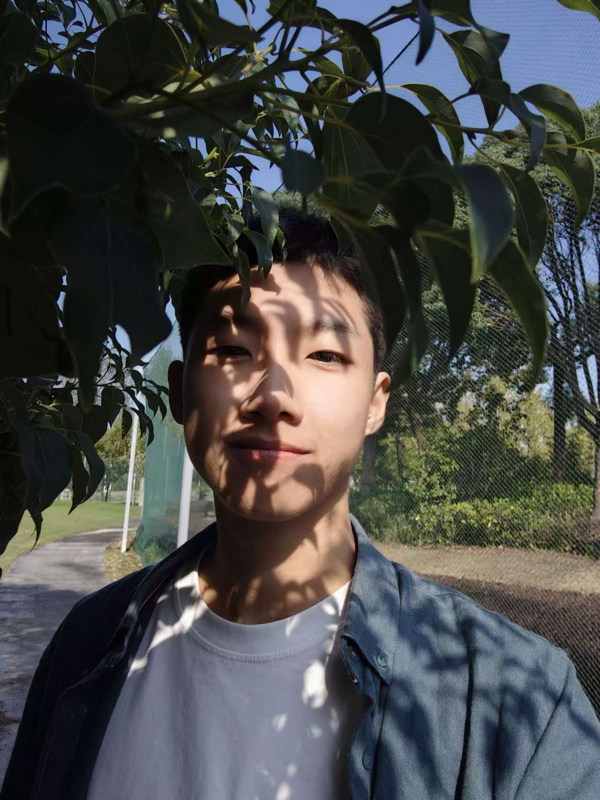

|
Yousen Tang I am an undergraduate student in Computer Science and Technology at Tongji University, expecting to graduate in June 2027. My research interests lie at the intersection of 3D Perception, Embodied AI, and Generative World Models. I am currently working as a Research Assistant at Peking University (VDIG Group), focusing on 3D Vision-Language-Action (VLA) models for continuous robotic control. I am highly motivated to pursue a Ph.D. in related fields and am actively seeking summer research opportunities. |
 |
{kind=link}
Publications & Research Experience |

|
R4Det: 4D Radar-Camera Fusion for High-Performance 3D Object Detection
Yousen Tang*, et al. (*Co-First Author) CVPR, 2026 project page / arXiv / code Proposed a radar-camera fusion framework addressing the inherent sparsity of 4D radar and geometric contamination. Achieved SOTA results, outperforming baselines by significant margins on TJ4DRadSet and VoD datasets. |

|
3D Vision-Language-Action (VLA) Perception Module for Robotics
Research Assistant, Peking University (VDIG Group) Feb 2026 - Present Focusing on designing a plug-and-play 3D structural perception module adaptable to multimodal VLA models. Exploring logic-guided bidirectional attention to bridge the feature gap between sparse point clouds and actionable language instructions. |

|
Conversational Data Analysis System (Data Insight Agent)
R&D Intern, ZhongAn Information Technology Jul 2025 - Sep 2025 Engineered an LLM-driven agentic workflow for automated data querying. Optimized model routing, improving intent classification accuracy by 3.8% while reducing inference overhead. Recognized with "Outstanding Individual" award. |

|
Multi-Agent Path Planning (MAPF) in Dynamic Environments
SITP Project Lead, Tongji University Dec 2023 - Jan 2025 Implemented A* for single-agent and Conflict-Based Search (CBS) for multi-agent coordination. Applied simulation algorithms based on PIBT for efficient AGV planning. |
Education |
|
Tongji University, Shanghai, China B.E. in Computer Science and Technology Sep 2023 - Jun 2027 (Expected) GPA: 3.78/4.0 | Undergraduate Scholarship |
Misc |

|
Baibai Baibai is my pet bird and an important companion in my daily life. Outside of research, I enjoy spending time with Baibai — a small reminder to slow down and appreciate simple moments. |
|
Template adapted from Jon Barron. |